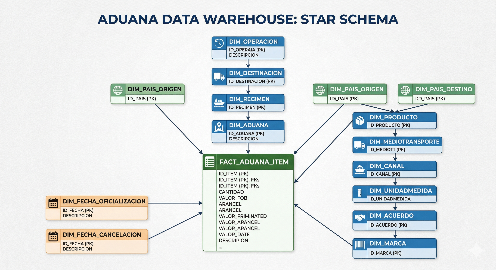

🎯 Bienvenido al Proyecto Aduana BI
dw lista para análisis y reportes interactivos.
El problema y la solución
- Columnas con mayúsculas y espacios (
PAIS ORIGEN) - Fechas guardadas como texto (
'15/03/2024') BRASILrepetido miles de veces- Reportes lentos e imprecisos en Power BI
- Datos limpios y normalizados en esquema
dw - Fechas reales en
oficializacionycancelacion BRASILen 1 sola fila dedw.dim_pais- Reportes rápidos y confiables en Power BI
Flujo general del proyecto
Los 6 notebooks que ejecutarás en orden
00 — Arquitectura
Leer conceptos antes de ejecutar
Solo lectura01 — Estructura
Crea el esquema dw y 15 tablas vacías
02 — Staging
Lee Excel, limpia y carga dw.stg_aduana
03 — Dimensiones
Genera 12 catálogos únicos en dw.dim_*
04 — Fact Table
14 LEFT JOINs → dw.fact_aduana_item
05 — Validaciones
8 validaciones de integridad del DWH
10 minTiempo total estimado
| Actividad | Tiempo | Dificultad |
|---|---|---|
| Instalar dependencias | 5 min | ⭐ Fácil |
| Leer NB 00 — Conceptos | 20 min | ⭐ Fácil |
NB 01 — Estructura (dw + 15 tablas) | 15 min | ⭐ Fácil |
NB 02 — Staging (Excel → dw.stg_aduana) | 20 min | ⭐ Fácil |
NB 03 — Dimensiones (12 dw.dim_*) | 15 min | ⭐⭐ Intermedio |
| NB 04 — Fact Table (14 JOINs) | 20 min | ⭐⭐⭐ Avanzado |
| NB 05 — Validaciones (8 checks) | 10 min | ⭐⭐ Intermedio |
| Conectar Power BI | 30 min | ⭐⭐ Intermedio |
| TOTAL | ~2:35 h | Mixto |
⚙️ Prerrequisitos — Preparar el entorno
Herramientas necesarias
| Herramienta | Versión mín. | Propósito |
|---|---|---|
| Python | 3.9+ | Lenguaje principal del proyecto |
| Jupyter Lab | Última | Ejecutar los notebooks .ipynb |
| DuckDB | Última | Base de datos del DWH (archivo único .duckdb) |
| Pandas | 1.5+ | Leer y transformar el Excel |
| OpenPyXL | Última | Soporte para archivos .xlsx |
| Power BI Desktop | 2023+ | Visualización final (solo Windows) |
pip install duckdb pandas openpyxl jupyterlab
import importlib
for lib in ['duckdb', 'pandas', 'openpyxl']:
ok = 'OK' if importlib.util.find_spec(lib) else 'FALTA — pip install ' + lib
print(f'{lib}: {ok}')
git clone https://github.com/RISteven/aduana_bi.git cd aduana_bi jupyter lab
Navega a la carpeta notebooks/ y abre los .ipynb en orden.
Estructura de carpetas del proyecto
Checklist de inicio
- Python 3.9+ instalado y en el PATH
- Librerías instaladas: duckdb, pandas, openpyxl, jupyterlab
- Proyecto descargado/clonado en tu equipo
- Jupyter Lab abre correctamente
- Notebook 00 leído (conceptos ETL, Star Schema, DuckDB)
Fase 1 — Crear la Estructura del DW
Notebook: 01_Crear_Estructura_DW.ipynb
dw dentro del archivo aduana.duckdb
y generar las 15 tablas vacías: 2 staging, 12 dimensiones, 1 fact table.
Es como construir las habitaciones de una casa antes de traer los muebles.
El modelo Star Schema del proyecto

Las 15 tablas que se crearán
| Tabla | Tipo | Descripción |
|---|---|---|
dw.stg_aduana | Staging | 41 columnas — réplica limpia del Excel de despachos |
dw.stg_destinaciones | Staging | 4 columnas — catálogo de códigos de destinación |
dw.fact_aduana_item | Fact | Tabla central: 2 IDs de fecha + 12 FKs + 17 métricas numéricas |
dw.dim_operacion | Dimensión | IMPORTACION / EXPORTACION (+ flags booleanos) |
dw.dim_destinacion | Dimensión | Regímenes aduaneros con descripción del catálogo |
dw.dim_regimen | Dimensión | Tipos generales de régimen |
dw.dim_aduana | Dimensión | Aduanas físicas del país |
dw.dim_pais | Dimensión | Países (origen y destino usan la misma tabla) |
dw.dim_producto | Dimensión | Clave compuesta: posicion NCM + 5 descripciones |
dw.dim_medio_transporte | Dimensión | TERRESTRE, AEREO, MARITIMO… |
dw.dim_canal | Dimensión | ROJO / VERDE / AMARILLO |
dw.dim_unidad_medida | Dimensión | KG, LT, UN, M2… |
dw.dim_acuerdo | Dimensión | Acuerdos comerciales (MERCOSUR, ACE…) |
dw.dim_marca | Dimensión | Marcas de productos |
dw.dim_fecha | Dimensión | Calendario derivado de oficializacion y cancelacion |
import duckdb, os
DB_PATH = r"C:\Información\proyectos\aduana_bi\db\aduana.duckdb"
os.makedirs(os.path.dirname(DB_PATH), exist_ok=True)
con = duckdb.connect(DB_PATH)
print(f"Conectado a: {DB_PATH}")
.duckdb.dwcon.execute("CREATE SCHEMA IF NOT EXISTS dw;")
print("Esquema 'dw' creado (o ya existía).")
Un esquema es como una carpeta que agrupa las tablas. Separar con dw. permite diferenciar nuestras tablas de posibles auxiliares.
tablas = [
"dw.fact_aduana_item",
"dw.dim_operacion", "dw.dim_destinacion", "dw.dim_regimen",
"dw.dim_aduana", "dw.dim_pais", "dw.dim_producto",
"dw.dim_medio_transporte", "dw.dim_canal", "dw.dim_unidad_medida",
"dw.dim_acuerdo", "dw.dim_marca", "dw.dim_fecha",
"dw.stg_destinaciones", "dw.stg_aduana"
]
for t in tablas:
con.execute(f"DROP TABLE IF EXISTS {t};")
print(f" {t} eliminada (o no existía).")
tablas = con.execute("""
SELECT table_name
FROM information_schema.tables
WHERE table_schema = 'dw'
ORDER BY table_name
""").fetchall()
print(f"Tablas en el esquema 'dw': {len(tablas)}")
for t in tablas:
print(f" ✓ {t[0]}")
con.close()
Checklist Fase 1
- Notebook 01 ejecutado sin errores
- Esquema
dwcreado en DuckDB - Verificado: 15 tablas listadas
- El archivo
db/aduana.duckdbexiste en disco
Fase 2 — Cargar el Staging (Bronze → Silver)
Notebook: 02_Cargar_Staging.ipynb
DatosXLSX.xlsx con Pandas, convertir fechas de texto a tipo DATE,
renombrar las 41 columnas al estándar del DW, y cargar el resultado en dw.stg_aduana.

Transformaciones que aplica el notebook
import duckdb, pandas as pd, os
DB_PATH = r"C:\Información\proyectos\aduana_bi\db\aduana.duckdb"
XLSX_PATH = r"C:\Información\proyectos\aduana_bi\data_lake\bronze\DatosXLSX.xlsx"
df = pd.read_excel(XLSX_PATH)
print(f"Filas: {len(df)} | Columnas: {len(df.columns)}")
# Fechas vienen como texto '15/03/2024' → convertir a DATE real
df['OFICIALIZACION'] = pd.to_datetime(
df['OFICIALIZACION'], format='%d/%m/%Y', errors='coerce'
).dt.date
df['CANCELACION'] = pd.to_datetime(
df['CANCELACION'], format='%d/%m/%Y', errors='coerce'
).dt.date
nulls = df['OFICIALIZACION'].isna().sum()
print(f"Fechas OFICIALIZACION NULL: {nulls}")
if nulls == len(df):
raise ValueError("100% de fechas son NULL. Verificar formato del Excel.")
df = df.rename(columns={
'DESPACHO CIFRADO' : 'despacho_cifrado',
'OPERACION' : 'operacion',
'DESTINACION' : 'destinacion',
'REGIMEN' : 'regimen',
'OFICIALIZACION' : 'oficializacion',
'CANCELACION' : 'cancelacion',
'AÑO' : 'anio',
'MES' : 'mes',
'ADUANA' : 'aduana',
'COTIZACION' : 'cotizacion',
'MEDIO TRANSPORTE' : 'medio_transporte',
'CANAL' : 'canal',
'ITEM' : 'item',
'PAIS ORIGEN' : 'pais_origen',
'PAIS PROCEDENCIA/DESTINO' : 'pais_procedencia_destino',
'USO' : 'uso',
'UNIDAD MEDIDA ESTADISTICA' : 'unidad_medida_estadistica',
'CANTIDAD ESTADISTICA' : 'cantidad_estadistica',
'KILO NETO' : 'kilo_neto',
'KILO BRUTO' : 'kilo_bruto',
'FOB DOLAR' : 'fob_dolar',
'FLETE DOLAR' : 'flete_dolar',
'SEGURO DOLAR' : 'seguro_dolar',
'IMPONIBLE DOLAR' : 'imponible_dolar',
'IMPONIBLE GS' : 'imponible_gs',
# ... (las 41 columnas completas en el notebook)
'TOTAL' : 'total',
})
print("Primeras 5 columnas:", list(df.columns[:5]))
dw.stg_aduana con CASTcon = duckdb.connect(DB_PATH)
con.execute("DELETE FROM dw.stg_aduana;") # idempotencia
con.register('df_stg', df) # DataFrame visible como tabla temporal SQL
con.execute("""
INSERT INTO dw.stg_aduana
SELECT
CAST(despacho_cifrado AS VARCHAR),
CAST(operacion AS VARCHAR),
CAST(destinacion AS VARCHAR),
CAST(regimen AS VARCHAR),
CAST(oficializacion AS DATE),
CAST(cancelacion AS DATE),
CAST(anio AS INTEGER),
CAST(mes AS VARCHAR),
CAST(aduana AS VARCHAR),
CAST(cotizacion AS DOUBLE),
CAST(medio_transporte AS VARCHAR),
CAST(canal AS VARCHAR),
CAST(item AS INTEGER),
CAST(pais_origen AS VARCHAR),
CAST(pais_procedencia_destino AS VARCHAR),
-- ... (41 columnas con CAST explícito)
CAST(total AS DOUBLE)
FROM df_stg;
""")
n = con.execute("SELECT COUNT(*) FROM dw.stg_aduana").fetchone()[0]
print(f"dw.stg_aduana cargada: {n} filas")
con.close()
Checklist Fase 2
- Notebook 02 ejecutado sin errores
-
dw.stg_aduanatiene las mismas filas que el Excel - Columnas renombradas (verificado con
df.columns.tolist()) -
oficializacionycancelacionson tipo DATE (no texto) -
dw.stg_destinacionescargada con el catálogo de regímenes
Fase 3 — Crear las Dimensiones (Silver → Gold)
Notebook: 03_Cargar_Dimensiones.ipynb
dw.stg_aduana y
crear catálogos sin repetición, cada uno con un ID surrogate generado por ROW_NUMBER().

Patrón estándar de cada dimensión
-- Patrón: limpiar → insertar valores únicos → asignar ID
DELETE FROM dw.dim_xxx;
INSERT INTO dw.dim_xxx (id_xxx, campo)
SELECT
ROW_NUMBER() OVER (ORDER BY campo) AS id_xxx, -- surrogate: 1, 2, 3...
campo
FROM (
SELECT DISTINCT campo
FROM dw.stg_aduana
WHERE campo IS NOT NULL AND TRIM(campo) <> ''
) t;
Dimensiones especiales
con.execute("DELETE FROM dw.dim_operacion;")
con.execute("""
INSERT INTO dw.dim_operacion (id_operacion, operacion, es_importacion, es_exportacion)
SELECT
ROW_NUMBER() OVER (ORDER BY operacion) AS id_operacion,
operacion,
UPPER(TRIM(operacion)) = 'IMPORTACION' AS es_importacion,
UPPER(TRIM(operacion)) = 'EXPORTACION' AS es_exportacion
FROM (
SELECT DISTINCT operacion FROM dw.stg_aduana
WHERE operacion IS NOT NULL AND TRIM(operacion) <> ''
) t;
""")
print(con.execute("SELECT * FROM dw.dim_operacion").fetchdf().to_string())
Los países vienen en formato 'ARG - ARGENTINA'. Se separan con SPLIT_PART
y se combinan origen + destino con UNION (sin ALL para eliminar duplicados).
INSERT INTO dw.dim_pais (id_pais, codigo_pais, descripcion_pais)
SELECT
ROW_NUMBER() OVER (ORDER BY codigo_pais, descripcion_pais) AS id_pais,
codigo_pais,
descripcion_pais
FROM (
SELECT DISTINCT
TRIM(SPLIT_PART(pais, ' - ', 1)) AS codigo_pais, -- 'ARG'
TRIM(SPLIT_PART(pais, ' - ', 2)) AS descripcion_pais -- 'ARGENTINA'
FROM (
SELECT pais_origen AS pais FROM dw.stg_aduana
UNION -- UNION sin ALL: elimina duplicados entre origen y destino
SELECT pais_procedencia_destino AS pais FROM dw.stg_aduana
) x
WHERE pais IS NOT NULL AND TRIM(pais) <> ''
) t
WHERE codigo_pais IS NOT NULL AND TRIM(codigo_pais) <> '';
Un producto no se identifica solo por el código NCM, sino por la combinación de 6 columnas.
INSERT INTO dw.dim_producto (
id_producto, posicion_ncm, rubro, desc_capitulo,
desc_posicion, desc_partida, mercaderia
)
SELECT
ROW_NUMBER() OVER (
ORDER BY COALESCE(posicion,''), COALESCE(rubro,''),
COALESCE(desc_capitulo,''), COALESCE(desc_posicion,''),
COALESCE(desc_partida,''), COALESCE(mercaderia,'')
) AS id_producto,
posicion AS posicion_ncm,
rubro, desc_capitulo, desc_posicion, desc_partida, mercaderia
FROM (
SELECT DISTINCT posicion, rubro, desc_capitulo,
desc_posicion, desc_partida, mercaderia
FROM dw.stg_aduana
) t;
dim_fecha se usa dos veces en la fact table: una para oficializacion y otra para cancelacion.
INSERT INTO dw.dim_fecha (
id_fecha, fecha, anio, mes_numero, mes_nombre, trimestre, anio_mes
)
WITH fechas AS (
SELECT oficializacion AS f FROM dw.stg_aduana WHERE oficializacion IS NOT NULL
UNION
SELECT cancelacion FROM dw.stg_aduana WHERE cancelacion IS NOT NULL
)
SELECT
ROW_NUMBER() OVER (ORDER BY f) AS id_fecha,
f AS fecha,
EXTRACT(YEAR FROM f),
EXTRACT(MONTH FROM f),
STRFTIME(f, '%B'), -- 'March'
CAST(FLOOR((EXTRACT(MONTH FROM f) - 1) / 3) + 1 AS INTEGER), -- trimestre
STRFTIME(f, '%Y-%m') -- '2024-03'
FROM fechas;
Verificación del NB 03
dims = ["dim_operacion","dim_destinacion","dim_regimen","dim_aduana",
"dim_pais","dim_producto","dim_medio_transporte","dim_canal",
"dim_unidad_medida","dim_acuerdo","dim_marca","dim_fecha"]
print(f"{'Dimensión':<30} {'Filas':>8}")
print("-" * 40)
for d in dims:
n = con.execute(f"SELECT COUNT(*) FROM dw.{d}").fetchone()[0]
print(f" {d:<28} {n:>8}")
con.close()
Checklist Fase 3
- Notebook 03 ejecutado sin errores
-
dw.dim_operaciontiene exactamente 2 filas -
dw.dim_paistiene 40+ filas (origen + destino combinados) -
dw.dim_productotiene filas por cada combinación NCM única -
dw.dim_fechatiene una fila por cada fecha única de los despachos
Fase 4 — Crear la Fact Table (14 JOINs)
Notebook: 04_Cargar_Fact_Table.ipynb
dw.fact_aduana_item: la tabla central del DWH.
Cada fila del staging se convierte en una fila de la fact table,
pero en lugar de texto descriptivo, tiene solo los IDs numéricos de cada dimensión.

Lógica de la consulta central
DELETE FROM dw.fact_aduana_item;
INSERT INTO dw.fact_aduana_item (
id_fact, despacho_cifrado, item,
id_operacion, id_destinacion, id_regimen, id_aduana,
id_pais_origen, id_pais_destino, id_producto,
id_medio_transporte, id_canal, id_unidad_medida,
id_acuerdo, id_marca,
id_fecha_oficializacion, id_fecha_cancelacion,
uso, cantidad_estadistica, kilo_neto, kilo_bruto,
fob_dolar, flete_dolar, seguro_dolar,
imponible_dolar, imponible_gs,
ajuste_a_incluir, ajuste_a_deducir,
derecho, isc, servicio, renta, iva, otros, total
)
SELECT
ROW_NUMBER() OVER (
ORDER BY COALESCE(s.despacho_cifrado,''), COALESCE(s.item,0)
) AS id_fact,
s.despacho_cifrado, s.item,
-- IDs de dimensiones (resolución por LEFT JOIN)
o.id_operacion,
d.id_destinacion,
r.id_regimen,
a.id_aduana,
po.id_pais AS id_pais_origen, -- dim_pais alias 'po'
pd.id_pais AS id_pais_destino, -- dim_pais alias 'pd'
p.id_producto,
mt.id_medio_transporte,
c.id_canal,
um.id_unidad_medida,
ac.id_acuerdo,
m.id_marca,
fo.id_fecha AS id_fecha_oficializacion, -- dim_fecha alias 'fo'
fc.id_fecha AS id_fecha_cancelacion, -- dim_fecha alias 'fc'
s.uso,
-- Métricas numéricas (directo del staging)
s.cantidad_estadistica, s.kilo_neto, s.kilo_bruto,
s.fob_dolar, s.flete_dolar, s.seguro_dolar,
s.imponible_dolar, s.imponible_gs,
s.ajuste_a_incluir, s.ajuste_a_deducir,
s.derecho, s.isc, s.servicio, s.renta, s.iva, s.otros, s.total
FROM dw.stg_aduana s
-- JOINs simples por texto (con TRIM para eliminar espacios)
LEFT JOIN dw.dim_operacion o ON TRIM(s.operacion) = TRIM(o.operacion)
LEFT JOIN dw.dim_destinacion d ON TRIM(s.destinacion)= TRIM(d.cod_destinacion)
LEFT JOIN dw.dim_regimen r ON TRIM(s.regimen) = TRIM(r.regimen)
LEFT JOIN dw.dim_aduana a ON TRIM(s.aduana) = TRIM(a.aduana)
-- JOIN por código de país (parte 1 del formato 'COD - DESC')
LEFT JOIN dw.dim_pais po
ON TRIM(SPLIT_PART(s.pais_origen, ' - ', 1)) = TRIM(po.codigo_pais)
LEFT JOIN dw.dim_pais pd
ON TRIM(SPLIT_PART(s.pais_procedencia_destino, ' - ', 1)) = TRIM(pd.codigo_pais)
-- JOIN por 6 campos combinados (clave compuesta de dim_producto)
LEFT JOIN dw.dim_producto p
ON COALESCE(TRIM(s.posicion), '') = COALESCE(TRIM(p.posicion_ncm), '')
AND COALESCE(TRIM(s.rubro), '') = COALESCE(TRIM(p.rubro), '')
AND COALESCE(TRIM(s.desc_capitulo), '') = COALESCE(TRIM(p.desc_capitulo), '')
AND COALESCE(TRIM(s.desc_posicion), '') = COALESCE(TRIM(p.desc_posicion), '')
AND COALESCE(TRIM(s.desc_partida), '') = COALESCE(TRIM(p.desc_partida), '')
AND COALESCE(TRIM(s.mercaderia), '') = COALESCE(TRIM(p.mercaderia), '')
-- JOINs simples restantes
LEFT JOIN dw.dim_medio_transporte mt ON TRIM(s.medio_transporte) = TRIM(mt.medio_transporte)
LEFT JOIN dw.dim_canal c ON TRIM(s.canal) = TRIM(c.canal)
LEFT JOIN dw.dim_unidad_medida um ON TRIM(s.unidad_medida_estadistica)= TRIM(um.unidad_medida)
LEFT JOIN dw.dim_acuerdo ac ON TRIM(s.acuerdo) = TRIM(ac.acuerdo)
LEFT JOIN dw.dim_marca m ON TRIM(s.marca_item) = TRIM(m.marca)
-- JOINs de fecha (tipo DATE, sin TRIM)
LEFT JOIN dw.dim_fecha fo ON s.oficializacion = fo.fecha
LEFT JOIN dw.dim_fecha fc ON s.cancelacion = fc.fecha
WHERE s.despacho_cifrado IS NOT NULL AND s.item IS NOT NULL;
fact_aduana_item ≈ filas de stg_aduana (diferencia mínima por filas sin clave natural).Checklist Fase 4
- Notebook 04 ejecutado sin errores
-
dw.fact_aduana_item≈ mismas filas quedw.stg_aduana - Los IDs de dimensiones no son todos NULL
-
id_fecha_oficializacioneid_fecha_cancelaciontienen valores -
fob_dolar,kilo_neto,totaltienen valores numéricos
Fase 5 — Validar la Integridad del DWH
Notebook: 05_Validaciones.ipynb
ConsAUX.py para confirmar
que el DWH está íntegro y consistente. Es el control de calidad antes de conectar Power BI.
Las 8 validaciones del NB 05
dwtables = con.execute("""
SELECT table_name FROM information_schema.tables
WHERE table_schema = 'dw' ORDER BY table_name
""").fetchall()
print(f"Tablas en 'dw': {len(tables)}") # Esperado: 15
for t in tables:
print(f" - {t[0]}")
print(f"{'Tabla':<35} {'Filas':>8}")
print("-" * 45)
for t in tables:
n = con.execute(f"SELECT COUNT(*) FROM dw.{t[0]}").fetchone()[0]
print(f" {t[0]:<32} {n:>8}")
dup = con.execute("""
SELECT COUNT(*) FROM (
SELECT despacho_cifrado, item, COUNT(*) c
FROM dw.fact_aduana_item
GROUP BY despacho_cifrado, item
HAVING COUNT(*) > 1
) x
""").fetchone()[0]
print(f"Duplicados en fact_aduana_item: {'OK' if dup==0 else f'ALERTA: {dup}'}")
SELECT
SUM(CASE WHEN despacho_cifrado IS NULL THEN 1 ELSE 0 END) AS null_despacho,
SUM(CASE WHEN item IS NULL THEN 1 ELSE 0 END) AS null_item
FROM dw.fact_aduana_item;
dim_keys = {
"dim_operacion":"operacion", "dim_destinacion":"cod_destinacion",
"dim_regimen":"regimen", "dim_aduana":"aduana",
"dim_pais":"codigo_pais", "dim_medio_transporte":"medio_transporte",
"dim_canal":"canal", "dim_unidad_medida":"unidad_medida",
"dim_acuerdo":"acuerdo", "dim_marca":"marca",
"dim_fecha":"fecha",
}
for dim, key in dim_keys.items():
dup = con.execute(f"""
SELECT COUNT(*) FROM (
SELECT {key}, COUNT(*) c FROM dw.{dim}
GROUP BY {key} HAVING COUNT(*) > 1) x
""").fetchone()[0]
print(f" {dim:<30} {'OK' if dup==0 else f'ALERTA: {dup}'}")
SELECT COUNT(*) FROM (
SELECT posicion_ncm, rubro, desc_capitulo,
desc_posicion, desc_partida, mercaderia, COUNT(*) c
FROM dw.dim_producto
GROUP BY posicion_ncm, rubro, desc_capitulo, desc_posicion, desc_partida, mercaderia
HAVING COUNT(*) > 1
) x; -- Esperado: 0
SELECT
COUNT(*) AS total_filas,
SUM(CASE WHEN despacho_cifrado IS NULL THEN 1 ELSE 0 END) AS null_despacho,
SUM(CASE WHEN item IS NULL THEN 1 ELSE 0 END) AS null_item,
SUM(CASE WHEN oficializacion IS NULL THEN 1 ELSE 0 END) AS null_fecha
FROM dw.stg_aduana;
Tabla de resultados esperados
| Validación | Resultado ideal | Si falla… |
|---|---|---|
Tablas en dw | 15 | Reejecutar NB 01 |
| Filas staging = Excel | 0 diferencia | Revisar NB 02 |
| Filas fact ≈ staging | 0–5% diferencia | Cambiar INNER por LEFT en NB 04 |
| Duplicados en fact | 0 | Reejecutar con DELETE previo |
| NULLs en clave natural | 0 | Verificar los datos fuente |
| FKs huérfanas | 0 en todas | Verificar JOIN condition en NB 04 |
| Duplicados en dims | 0 en todas | Reejecutar NB 03 |
| dim_producto compuesta | 0 | Reejecutar NB 03 |
Checklist Fase 5
- Notebook 05 ejecutado sin errores de Python
- 15 tablas presentes en el esquema
dw - 0 duplicados en
dw.fact_aduana_item - 0 NULLs en clave natural (
despacho_cifrado,item) - 0 FKs huérfanas en las 14 relaciones
- 0 duplicados en todas las dimensiones
Fase 6 — Conectar Power BI
Archivo: Dash_DWH.pbix
aduana.duckdb usando ODBC,
crear las relaciones del modelo y construir al menos 3 reportes interactivos.
Opción A — Conectar por ODBC (recomendado)
El driver ya viene en la carpeta DUCKDB/ del proyecto. Ejecutar como Administrador:
.\DUCKDB\odbc_install.exe
- Power BI Desktop → Inicio → Obtener datos → ODBC
- Cadena de conexión:
Database=C:\Información\proyectos\aduana_bi\db\aduana.duckdb - Seleccionar todas las tablas
dim_*yfact_*del esquemadw
Opción B — Exportar a CSV (si ODBC falla)
import duckdb, os
con = duckdb.connect(r'C:\Información\proyectos\aduana_bi\db\aduana.duckdb')
os.makedirs('export_pbi', exist_ok=True)
for t in ['fact_aduana_item','dim_pais','dim_operacion','dim_producto',
'dim_fecha','dim_aduana','dim_destinacion','dim_regimen','dim_canal']:
con.query(f"SELECT * FROM dw.{t}").to_df().to_csv(f'export_pbi/{t}.csv', index=False)
print(f"Exportado: {t}.csv")
con.close()
Relaciones clave en el modelo Power BI
| Tabla origen | Campo FK | Tabla destino | Campo PK |
|---|---|---|---|
| fact_aduana_item | id_operacion | dim_operacion | id_operacion |
| fact_aduana_item | id_pais_origen | dim_pais | id_pais |
| fact_aduana_item | id_pais_destino | dim_pais | id_pais |
| fact_aduana_item | id_producto | dim_producto | id_producto |
| fact_aduana_item | id_aduana | dim_aduana | id_aduana |
| fact_aduana_item | id_fecha_oficializacion | dim_fecha | id_fecha |
| fact_aduana_item | id_fecha_cancelacion | dim_fecha | id_fecha |
Reportes sugeridos
FOB por Operación
Importación vs exportación en fob_dolar
Top 10 Países
Por descripcion_pais y fob_dolar
Tendencia Mensual
Por anio_mes de dim_fecha
Por Aduana
Ranking de aduana por volumen
Top NCM
Posiciones arancelarias con mayor fob_dolar
Canal de Control
Distribución ROJO / VERDE / AMARILLO
Avanzado📖 Glosario de Conceptos Clave
| Término | Definición | En este proyecto |
|---|---|---|
| ETL | Extract, Transform, Load | Excel → staging → dims → fact |
| Data Warehouse | BD optimizada para análisis, no operaciones | El archivo aduana.duckdb |
Esquema (dw) | Carpeta lógica que agrupa tablas | Todas las tablas son dw.xxx |
| Bronze/Silver/Gold | Capas de madurez: crudo/limpio/análisis | Excel / stg_aduana / dim_* + fact_* |
| Staging | Tabla de paso: datos limpios, aún sin normalizar | dw.stg_aduana |
| Dimensión | Catálogo sin repetición con ID surrogate | dw.dim_pais, dw.dim_producto |
| Fact Table | Tabla central: métricas numéricas + FKs a dimensiones | dw.fact_aduana_item |
| Star Schema | Una fact table central + dimensiones alrededor | El diagrama Schema.png |
| Surrogate Key | ID artificial generado con ROW_NUMBER() | id_operacion, id_pais… |
| Natural Key | Identificador propio del negocio | despacho_cifrado + item |
| LEFT JOIN | Conserva todas las filas de la izquierda aunque no haya match | 14 LEFT JOINs en NB 04 |
| SPLIT_PART() | Divide texto por separador y devuelve parte N | SPLIT_PART('ARG - ARGENTINA',' - ',1) → 'ARG' |
| ROW_NUMBER() | Función de ventana que numera filas: 1, 2, 3… | Genera IDs surrogate en cada dimensión |
| COALESCE(x,'') | Reemplaza NULL por valor por defecto | JOIN de dim_producto (clave compuesta) |
| DuckDB | BD SQL embebida en un archivo, sin servidor | aduana.duckdb |
| Idempotencia | Ejecutar N veces da el mismo resultado | DELETE FROM dw.xxx antes de cada INSERT |
🛠️ Resolución de Problemas
Causa: con.close() fue llamado y luego se intentó usar con.
con = duckdb.connect(r'C:\Información\proyectos\aduana_bi\db\aduana.duckdb')
Regla: no cierres la conexión hasta haber terminado todo el notebook.
Causa: el nombre exacto en el Excel es diferente (espacios, acentos, mayúsculas).
print(df.columns.tolist()) # Ver los nombres exactos print(repr(df.columns[0])) # Ver caracteres invisibles
Ajusta el rename() en el NB 02 con los nombres exactos que devuelve el comando anterior.
oficializacion quedan 100% NULL▼Causa: el formato real del Excel no coincide con '%d/%m/%Y'.
print(df['OFICIALIZACION'].head()) # ver el formato real print(type(df['OFICIALIZACION'].iloc[0])) # ver el tipo de dato # Si el formato es '2024-03-15': df['OFICIALIZACION'] = pd.to_datetime(df['OFICIALIZACION'], format='%Y-%m-%d', errors='coerce').dt.date
fact_aduana_item tiene muchas menos filas que stg_aduana▼Causa: algún JOIN en el NB 04 es INNER JOIN en lugar de LEFT JOIN.
Busca en el NB 04 cualquier JOIN o INNER JOIN y cámbialo por LEFT JOIN.
Causa: el notebook se ejecutó dos veces sin borrar datos anteriores.
Cada notebook tiene celdas de DELETE FROM al inicio — asegúrate de ejecutarlas.
Causa: driver ODBC no instalado o el esquema dw no aparece.
En la cadena de conexión de Power BI, especificar explícitamente:
Luego seleccionar las tablas bajo el esquema dw en el navegador de tablas.
Alternativa: exportar a CSV con el script de la Fase 6.
👨🏫 Guía Docente
Secuencia de clases
| Clase | Tema | Hs | NB | Objetivo |
|---|---|---|---|---|
| 1 | Introducción y arquitectura | 2h | 00 | Entender el problema antes de ver código |
| 2 | Diseño del DW — esquema dw | 2h | 01 | Por qué separar staging / dims / fact |
| 3 | ETL — Excel a Staging | 2h | 02 | Fechas, CAST, idempotencia |
| 4 | ETL — Dimensiones | 2h | 03 | ROW_NUMBER, SPLIT_PART, UNION, clave compuesta |
| 5 | ETL — Fact Table y JOINs | 2h | 04 | 14 LEFT JOINs, alias, fob_dolar y métricas |
| 6 | Validación e integridad | 1h | 05 | 8 validaciones, claves huérfanas, HAVING |
| 7 | Power BI y cierre | 1h | — | ODBC, modelo relacional, reportes |
Conceptuales
- ¿Por qué guardamos
id_operacion = 1en la fact table en vez de'IMPORTACION'? - ¿Qué ventaja tiene el esquema
dwpara organizar las tablas? - ¿Por qué
dim_paisse usa dos veces en la fact table (id_pais_origeneid_pais_destino)? - ¿Por qué
dim_fechatambién se usa dos veces (oficializacionycancelacion)? - ¿Qué significa que un proceso sea idempotente?
Técnicas
- ¿Qué devuelve
SPLIT_PART('BRA - BRASIL', ' - ', 1)? - ¿Qué diferencia hay entre
DELETE FROM dw.dim_paisyDROP TABLE dw.dim_pais? - ¿Qué pasa si hay un valor en
stg_aduana.operacionque no existe endim_operacion? - ¿Por qué el JOIN de
dim_productonecesita 6 condiciones AND en vez de 1? - ¿Por qué se usa
COALESCE(campo, '')en la clave compuesta de producto?
| Error | Causa | Lección |
|---|---|---|
| Connection closed | con.close() prematuro | La conexión es un recurso que se abre y cierra una sola vez por notebook |
| Column not found | Nombre exacto diferente en el Excel | Los datos reales son sucios — siempre verificar con df.columns |
| 100% fechas NULL | Formato '%d/%m/%Y' incorrecto | Imprimir df['OFICIALIZACION'].head() para ver el formato real |
| fact << staging | INNER JOIN en vez de LEFT JOIN | LEFT JOIN preserva todos los registros aunque haya datos incompletos |
| Duplicate key | INSERT sin DELETE previo | Idempotencia: siempre limpiar antes de cargar |
| Componente | % | Criterio |
|---|---|---|
| Entendimiento conceptual | 30% | Examen escrito sobre ETL, Star Schema, DuckDB |
| Ejecución práctica | 40% | Los 5 notebooks ejecutados sin errores y todas las validaciones pasando |
| Análisis en Power BI | 20% | 5+ reportes interactivos usando fob_dolar, dim_fecha, etc. |
| Presentación | 10% | Explicar el modelo a la clase |